LÀM SẠCH
Chim, thú, cá... sau khi đã đánh bắt được, các bạn phải biết cách làm cho sạch trước khi nấu nướng. Các bạn đừng bắt chước theo tài liệu hay cung cách của người nước ngoài; con gì cũng lột da. Đó là do khẩu vị của họ (vì họ ít ăn da) và cũng một phần do họ không biết cách làm sạch lông hay vảy. Các bạn hãy tìm hỏi một người Việt Nam sành ăn xem, nếu như heo rừng, kỳ đà, rắn, nhím, gà, vịt... mà lột da xem họ có chịu không? Hoặc nướng hay chiên xù mà đánh vảy thì những tay đầu bếp nông thôn sẽ nghĩ thế nào? Chúng ta có khẩu vị cũng như cách làm riêng của chúng ta. Hơn nữa trong vùng hoang dã, đánh bắt được một con thú đã khó khăn mà các bạn lột bỏ da thì quá uổng phí (trừ phi các bạn cần tấm da để dùng vào chuyện khác)
Làm sạch các loại chim, gia cầm
Các loại chim ăn hạt, trái cây và côn trùng, thì có thể nhổ lông khi còn sống hay đã chết, sau đó thui qua lửa ngọn cho vàng rồi mới mổ
Những loại chim ăn cá, bơi lặn, săn mồi, gà vịt... thì trụng nước sôi rồi mới nhổ lông
(nếu cần, có thể thui lại trên lửa ngọn)
Khi mổ phải cẩn thận, đừng làm vấy dơ bẩn, phải rửa lại bằng nước lạnh, thịt sẽ có mùi tanh làm mất ngon.
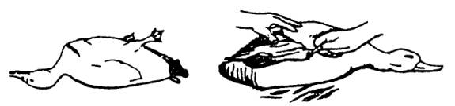
THÚ
Trừ các loại lớn cần phải lột da, còn các thú vừa và nhỏ đều có thể làm sạnh bằng những phương pháp dưới đây:
Thui: Các loại thú lớn và vừa như heo rừng, mển, nai... hay các looài thú nhỏ như chuột, chồn, nhím... hoặc các loài bò sát có vảy da như rắn, kỳ đà... đều có thể thui qua lửa ngọn cho lông cháy xém rồi cạo sạch.
Vùi tro:
- Các loài thú và bò sát nhỏ như sóc, chuột, kỳ nhông, rắn mối... thì nên vùi dưới lớp tro nóng chừng một vài phút là có thể đem ra cạo sạch được.
Trụng nước nóng:
- Có thể áp dụng cho bất cứ loại thú nào nhưng phải biết cách pha nước cho vừa đủ nóng (cỡ khoảng 60 hay 65 độ) Nếu nguội quá thì cạo không ra. nếu nóng quá, sẽ bị “sát” cạo cũng hết ra luôn.
Pha nước xong, ngâm con thú trong nước nóng độ 2-3 phút rồi dùng tay nhổ thử. Nếu lông tróc dễ dàng là có thể đem ra cạo nhanh tay cho sạch (nếu bạn đang trụng nước đang sôi, bảo đảm các bạn chỉ còn cách duy nhất là lột da mới sạch, vì lông đã bị “sát”). Sau khi cạo sạch, các bạn nên thui lại bằng lửa ngọn cho vàng, vừa sạch lông còn sót, vừa thơm ngon hơn.
Trụng nước sôi:
- Rắn, rùa, kỳ đà, kỳ tôm... thì phải trụng nước thật sôi mới có thể cạo sạch được lớp vảy bên ngoài. Ếch nhái, chàng hiu, ểnh ương... cũng phải trụng nước thật sôi thì mới cạo sạch được lớp nhớt (nếu không muốn lột da)
Lột da:
- Như đã nói trên lột da là phương pháp “xưa” rồi. Ngày nay, ngay cả rắn, ếch... mà người ta còn để cả da, vì nó rất ngon. Tuy nhiên, nếu các bạn không biết cách làm nào khác, thì lột da là phương pháp dễ làm và nhanh nhất. Hoặc các bạn muốn có tấm da để dùng vào các việc khác
Muốn lột da, các bạn hãy làm theo các công đoạn sau:
° Nếu con vật còn sống, hãy cắt cổ để lấy tiết.
° Lột da ngay sau khi con vật vừa chết, để càng lâu, càng khó lột.
° Treo hai chân sau của con vật lên cao vừa tầm tay.
° Khứa vòng quanh hai khủy chân sau và hai kheo chân trước. Rạch theo lằn chấm rồi lột da từ trên (hai chân sau) xuống.
Cắt bỏ bộ sinh dục (Đừng để cho lông dính vào thịt)
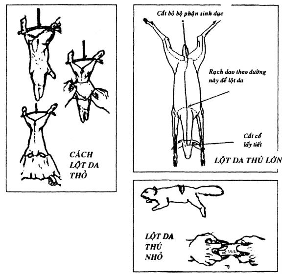
Các loại thú nhỏ như sóc, chuột... chỉ cần cắt một lần ngắn ở trên lưng. Dùng ngón tay trỏ và giữa của hai bàn tay, kéo ngược ra hai đầu.
- Muốn lột da ếch, các bạn chặt đầu phía dưới 2 mắt. Rạch một đường trên lưng, ngang eo. Một tay cầm con ếch bằng hai ngón, một tay lột, dễ dàng.
- Nếu lột da cóc, các bạn đừng lột từ trên xuống như ếch, rất khó lột. Phải bắt đầu từ các ngón chân sau lột ngược lên. Mổ bỏ trứng và lòng ruột (vì rất độc).
MỔ BỤNG:
Các loài thú, sau khi đã làm lông hay lột da xong, thì mổ phanh bụng, móc hết ruột gan để riêng ra, phân loại rồi làm sạch. (Cố gắng đừng để làm vấy bẩn thịt, phải rửa lại bằng nước lạnh, thịt sẽ mau hư và mất ngon. Nhưng bộ lòng thì bắt buộc phải rửa)
Tim thì bổ đôi, rửa sạch máu bầm. Cật bổ đôi, lạn sạch hoi. Gan thì nhẹ tay tách mật ra. Ruột thì xả hết chất bẩn, lộn ra rổ chà cho thật sạch.
Các bộ phận khác như: Lưỡi thì trụng nước sôi cạo sạch. Óc thì mổ đôi sọ ra để lấy. Mỡ thì thắng để dành ăn hay đốt đèn. Bốn cái “dụms” chân làm sạch, phơi khô để làm lương thực dự trữ. Sừng (nếu có) và xương nếu có thể thì nấu cao hoặc dùng làm các công cụ và vũ khí.
Chú ý:
Sau khi vừa bắn hạ thú hay khi vừa giết thịt, hãy cắt bỏ bộ phận sinh dục của con thú đực và các hạch hoi của thú cái (thường nằm hai bên háng của thú). Nếu không, thịt sẽ có mùi hôi rất khó ăn.
LÀM CÁ:
Hầu hết các loại cá đều phải phải đánh vảy, chặt bỏ vây, móc mang, mổ bụng bỏ ruột. Nhưng cá chép, cá trôi, cá đối, các loại cá trắng... thì không cần đánh vảy mà chỉ cần mổ bụng và làm sạch là đủ.
Các loại cá không có vảy như cá trê, cá ngát, lươn... thì trụng nước ấm hay dấm hoặc lăn tro bếp mà “vuột nhớt” rồi rửa sạch.
Các loại cá còn sống và vùng vẫy nhiều thì đập đầu cho chết rồi mới làm
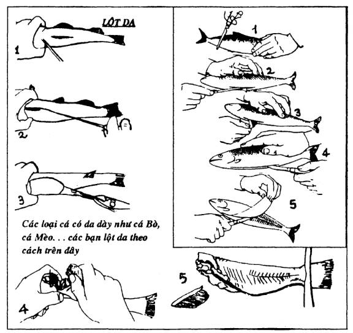
LẤY PHI LÊ (FILLET) CÁ
Các loại cá lớn, cá nhiều xương hay cá có xương cứng... trước khi phơi hay sấy khô, các bạn nên lạn xương để lấy phi lê theo cách dưới đây:
- Làm sạch cá sau khi cá vừa chết
- Rửa sạch nhớt, lau khô, để ráo nước.
- Dùng dao bén (Fillet Knife) lần lượt lạn theo hình mình họa.
- Xương và đầu còn lại, các bạn có thể nấu canh hay nấu cháo
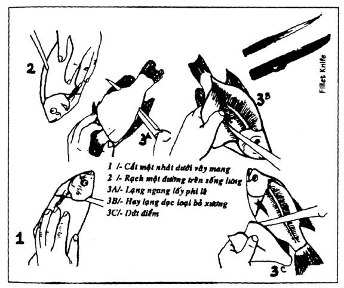
CHẾ TẠO BẾP
Ở những nơi hoang dã, tùy theo địa thế và vật dụng chúng ta có thể tìm thấy được trong vùng, để chế tạo những kiểu bếp giản dị và tiện lợi. Dưới đây là những kiểu bếp để gợi ý:
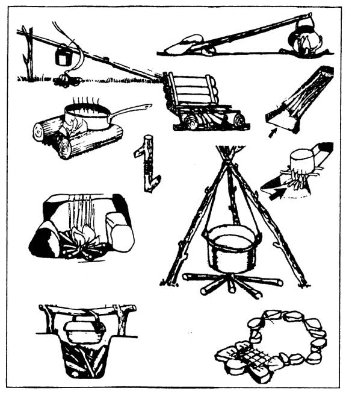
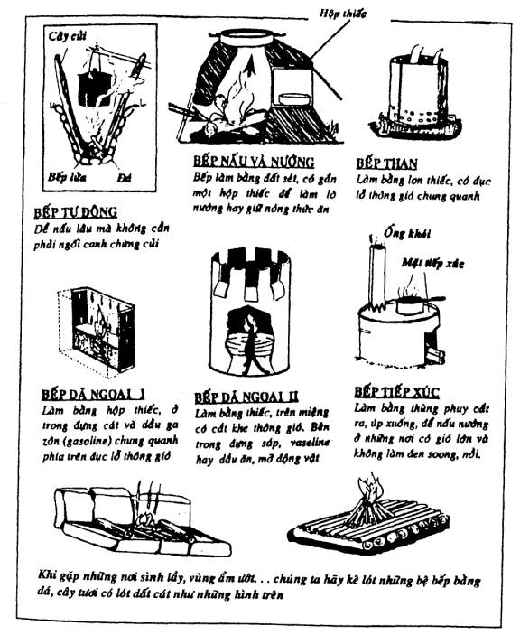
NẤU NƯỚNG KHI KHÔNG CÓ SOONG NỒI
Ở những nơi hoang dã, dù không có nồi niêu, soong, chảo... các bạn vẫn có thể dùng óc sáng tạo và tài tháo vát của mình để có những bữa ăn tươm tất. Chúng tôi xin hướng dẫn các bạn một số kỹ năng để các bạn tham khảo, rồi tùy theo vật liệu có được, các bạn hãy tự xoay sở lấy.
NẤU CƠM
Nấu cơm lam:
Lấy một ống tre lồ ô, bương, mạnh tôn, tre gai... (loại có ống lớn), không quá non hay quá già. Cắt đầu mắt theo 1 trong 3 cách dưới đây:
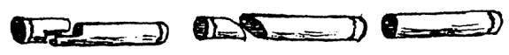
Ngâm gạo hay nếp từ 1 đến 2 giờ (nếu là gạo thì ngâm lâu hơn)
Đổ nếp (hay gạo) vào ống tre (đừng nén chặt)
Đổ nước vừa síp (nếu là nếp), hoặc ngập một lóng tay (nếu là gạo).
Nút thật chặt đầu ống tre bằng các loại lá tươi không độc (lá chuối, lá dong, lá nghệ...) hoặc ráp các khớp đầu ống tre lại, rồi dùng dây tươi cột lại cho cứng, bên ngoài đắp đất sét cho dây khỏi cháy
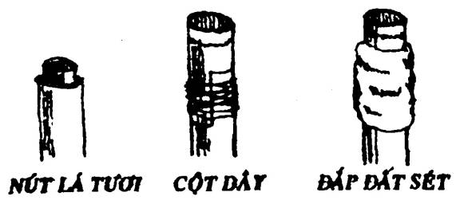
- Dựng ống tre nghiêng trên đống lửa (nhớ xoay cho đều), đến khi lớp vỏ bên ngoài thật vàng hay cháy xém là được.
- Chẻ bớt dần lớp vỏ ngoài cho đến khi còn lại một lớp mỏng, cắt ra từng khoanh.
Mách nước; Các bạn hòa một tí bột ngọt với muối vào trong nước trước khi đổ vào ống tre, như vậy thì cơm ăn rất ngon mà không cần thức ăn.
Nấu theo kiểu Mã Lai 1:
Đào một cái hố sâu chừng 30cm, rộng 40cm. Lót đá, sỏi xuống đáy và chung quanh thành hố (1). Đốt lửa cho đến khi đá thật nóng thì lấy hết củi ra, còn lại than hồng. Bỏ túm gạo đã chuẩn bị (như cách nấu cơm đùm), hoặc cá thịt đã gói thật kỹ bằng lá tươi xuống dưới hố (2), phủ lên trên một lớp than rồi lấp đất lại (3). Để như thế chừng vài giờ sau (hoặc khi nào cần) thì bới lên. Cơm và thức ăn vẫn nóng như mới nấu.
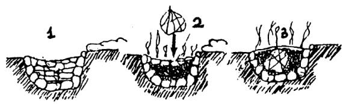
Nấu theo kiểu Mã Lai 2
Đào một cái hố, lót đá và đất nóng kiểu 1. Lấy hết củi và than ra, lót một lớp lá tươi, để thịt hay cá xuống lớp lá rồi phủ thêm một lớp lá tươi nữa. Cắm một cành cây chính giữa lỗ rồi lấp lại, ém chặt.
Sau đó thì rút cành cây lên, đổ chừng một chén nước xuống cái lỗ nhỏ đó, lấp lại. Nước xúc tác với đá nóng sẽ bốc hơi thành một loại hơi nóng để làm chín thức ăn. Để chừng vài giờ hoặc khi nào cần ăn thì bới lên.
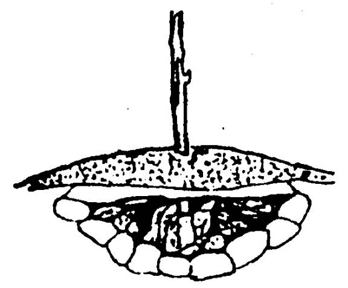
Nấu bằng trái dừa:
- Lấy một trái dừa tươi, vạt bớt một lớp vỏ ngoài, để lại 0.5 đến 1cm bao quanh gáo dừa, cắt 1/2 gáo, phần trên cuống để làm nắp, đổ gạo hay thức ăn vào trong trái dừa, (Gạo cũng phải xử lý như cách nấu cơm lam), đậy nắp lại, dùng chốt nhọn ghim cứng và để vào đống lửa cho đến khi cháy sém là được.
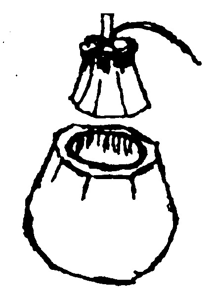
LÀM THỨC ĂN
Gà, vịt bao đất sét.
Gà vịt cắt cổ xong, làm ướt lông (muốn móc ruột hay không cũng được). Đất sét nhào cho dẻo, đắp chung quanh con gà (hay vịt) cho thật kín. Để xuống đất, lấp sơ một lớp cát mỏng. Chất củi đốt cho đến khi đất sét trở nên khô cứng như gạch, khều ra, gỡ từng mảnh đất sét, lông sẽ dính theo, khi xé ăn thì bỏ bộ lòng (nếu ta không làm sạch trước)
Gà, vịt bao lá sen, đất sét
Gà, vịt làm sạch, ướp gia vị tùy thích (cơ bản là hành, tỏi, muối, tiêu, đường...) bao lại bằng lá sen (hay lá dong, lá chuối, các loại lá cây không có độc, hoặc lá cây có tinh dầu như cam, chanh, bưởi...) Dùng đất sét dẻo để bọc ở ngoài. Cho vào đống lửa đốt cho đến khi đất sét khô cứng như gạch là đem ra ăn được.
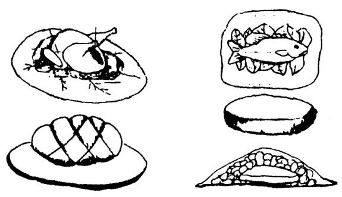
Ghi chú: Cách bao lá sen, đất sét này cũng có thể dùng cho cá thịt
Cá, thịt ốp bẹ chuối
Cá, thịt làm sạch, ướp gia vị tùy thích. Lấy một hay hai bẹ chuối (tùy theo cá hay thịt lớn nhỏ) gập đôi lại, bỏ cá hay thịt vào giữa, dùng dây rừng tươi cột lại (hoặc dùng que tươi ghim lại, bỏ vào đống lửa cho đến khi bẹ chuối cháy xém thì khều ra
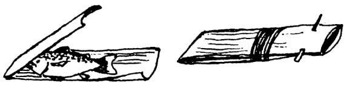
Đổ trứng trong củ hành
Lấy 1 củ hành tây thật lớn, cắt 1/3 làm nắp, phần còn lại thì khoét rỗng ruột. Đổ trứng vào, đậy “nắp” lại để than hồng một lúc, trứng sẽ chín.
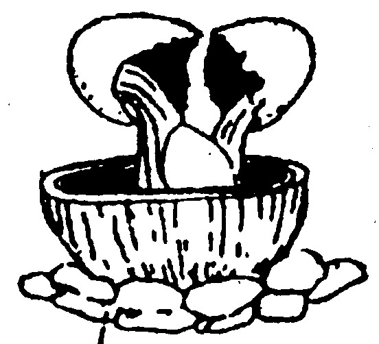
Nấu canh bằng ống tre
Lấy một ống tre loại lớn, còn tươi, vạt theo hình minh họa
Đóng hai cọc cho bằng nhau, gác ống tre lên, đổ nước vào để lấy thăng bằng trước khi nấu.
Với phương pháp này, chúng ta có thể nấu canh, kho cá, thịt, chiên trứng.
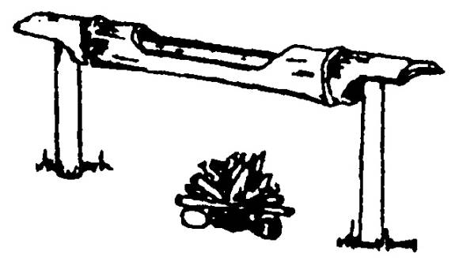
Bằng đá, gạch
Các bạn có thể dùng một phiến đá bằng phẳng, một miếng ngói, một cục gạch, một tấm thiếc hay kim loại khác, rửa thật sạch, đặt lên bếp thay thế chảo để chiên trứng, nướng bánh, nướng thịt...
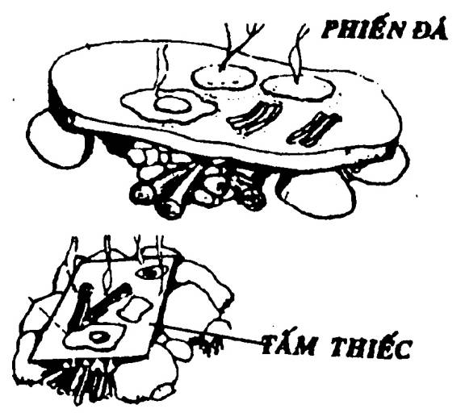
Dùng giấy bạc kim loại
Nếu các bạn có loại giấy bạc kim loại này, thì có thể ứng dụng rất đa dạng trong việc nấu nướng. Các bạn có thể chế tạo một vỉ nướng, gói cá hay thịt để nướng (hạn chế tiếp xúc trực tiếp với ngọn lửa làm cháy khét). Có thể dùng lá chuối, lá khoai môn, lá sen... hoặc các loại lá có tinh dầu như chanh, cam, bưởi, sả... để gói lại trước khi bọc giấy bạc kim loại ra ngoài.
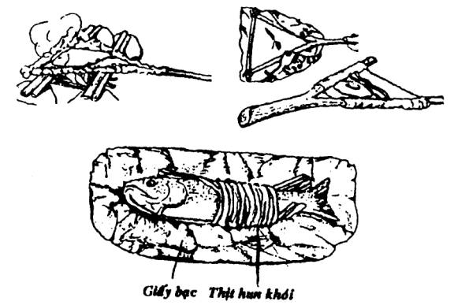
Nồi da xáo thịt
Lấy loại da thú lớn, mới vừa lột, căng lên một khung cây hình lòng chảo, để thay thế nồi. Cắt thịt bỏ vào trước khi bắc lên bếp. Loại “nồi” này có thể xào nấu như thường, nhưng khi cần có thể ăn luôn “nồi”.
Khi nấu loại nồi này, các bạn phải nhớ là trong nồi phải luôn luôn có nước, nếu không sẽ thành món “nồi nướng”.
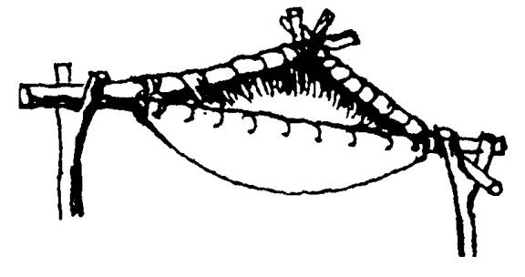
Sử dụng bao giấy hoặc tờ báo
Lấy một túi giấy đựng hàng, nhúng nước cho ướt phần đáy.
Thái thật mỏng thịt ba rọi hay lấy thịt xông khói (Bancon), lót một lớp dưới đáy.
- Đổ trứng lên lớp thịt đó.
- Cuốn miệng bao lại, đồng thời đục lổ hay xỏ cây vào làm tay cầm hay treo giá treo.
- Treo lên đám than hồng (không để cháy thành lửa ngọn) trong khoảng từ 10 - 15 phút.
- Nhúng nước lại khi bao muốn bắt cháy.
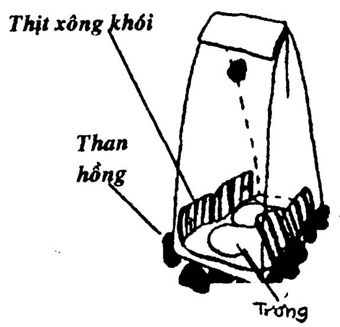
NƯỚNG
Khi không có nồi niêu soong chảo, chúng ta còn có thể sử dụng các cách nướng khác nhau như những hình gợi ý dưới đây
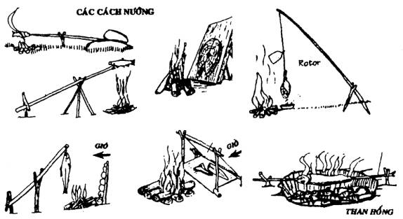
MUỐI
Là một khoáng chất rất cần thiết cho đời sống của chúng ta, nhưng vì quá quen thuộc đến độ đôi khi chúng ta không nhận thấy sự quan trọng của nó. Thường thì trong các nguồn thực phẩm đã có muối, nhưng không đủ cho nhu cầu cơ thể chúng ta, cho nên trong thức ăn, chúng ta cần tăng cường một lượng muối nhất định. Vì nếu không, cơ thể chúng ta dễ suy kiệt dần.
Muối cũng rất cần thiết cho việc bảo quản thực phẩm. Trước khi phơi khô cá hay thịt, chúng ta phải ướp muối, muốn muối chua rau cải hay làm mắm, chúng ta cũng cần nhiều muối... Vì thế, nếu trong hành trang của các bạn hay vùng của các bạn ở không có muối thì tình thế khá tồi tệ đấy.
° Nếu các bạn ở gần bờ biển, thì có thể làm ra muối bằng cách nấu cho nước biển bay hơi, muối sẽ đọng lại.
° Vào những tháng có nắng gió, các bạn lấy nước biển đổ vào những vật chứa nông và rộng, hoặc các phiến đá lòng chảo, nắng gió sẽ làm cho nước bốc hơi, chỉ còn lại muối. Các bạn nên làm ra thật nhiều muối để dự trữ cho những ngày mưa gió.
° Trong trường hợp bắt buộc, các bạn có thể đốt tre lồ ô hay một số cây cọ thuộc họ dừa (Palmac), cỏ tranh... rồi lấy tro của nó, hoà với nước, lược các chất dơ, nấu cô lại, ta có một thứ nước lờ lợ. Loại nước này chỉ giúp cho chúng ta cầm cự một thời gian, không thể thay thế muối được.